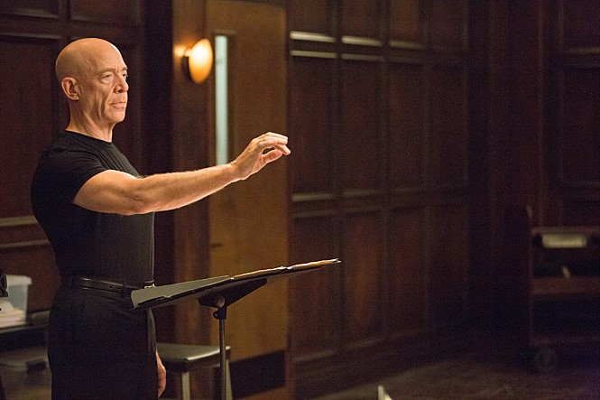
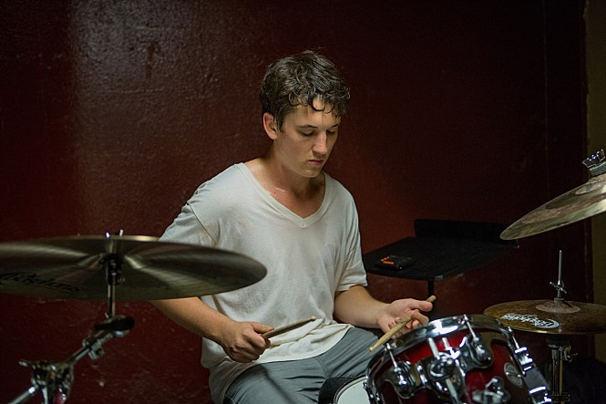

감독: 데이미언 셔젤
출연진: 마일즈 텔러, J.K 시몬스
장르: 드라마
개봉일: 2014년 10월 10일 (미국)
 
줄거리: 최고의 드러머가 되기 위해서라면 무엇이든 할 각오가 되어있는 음악대학 신입생 앤드류는 우연한 기회로 누구든지 성공으로 이끄는 최고의 실력자이지만, 또한 동시에 최악의 폭군인 플렛처 교수에게 발탁되어 그의 밴드에 들어가게 된다. 폭언과 학대 속에 좌절과 성취를 동시에 안겨주는 플렛처의 지독한 교육방식은 천재가 되길 갈망하는 앤드류의 집착을 끌어내며 그를 점점 광기로 몰아넣는데…